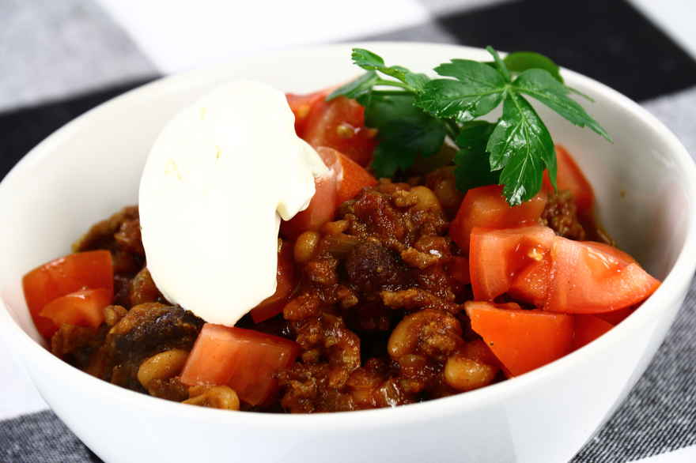

Chili Con Carne

Ingredients:
500 grams Beef, minced approx. 10% fat
4 Onions, peeled weight
1 tsp. Chopped tomatoes, 400g
1 bouillon cube, beef
1 tsp. White beans in tomato sauce, baked beans, preserves
1 tsp. Kidney beans, 240g
70 grams Tomato puree, concentrated
1 tsp. Chili strong, pounded
1 tbsp. Chili mild, ground
Salt
Description:
Chili con carne
A chili con carne is a wonderful, warming and spicy stew with chili, meat, tomato and beans. Although many believe it, chili con carne is not a Mexican dish, but rather it probably originated in San Antonio, Texas. Regardless of its origin, the stew, with its warm spices and satisfying weight, has won many hearts around the world. Chili con carne is easy food for many guests, tastes at least as good the next day, and it can be varied endlessly.
Different types of chili con carne
This chili con carne can easily be served to both children and adults. If you want a stronger chili con carne, you can add more chili seasoning, garlic or fresh chili. You can also make the dish with dried beans, as long as you remember to soak and cook them beforehand. Here you can use, for example, dried brown beans, red kidney beans and white beans. There are also many who like to round off the taste with a piece of chocolate in chili con carne. If you want to try it, just stir a square of dark chocolate or two into the pan of chili con carne before serving.
What do you serve with chili con carne?
A chili con carne can be served as is, as there is a lot of weight in the dish. A dollop of creme fraiche on top always gives a bit of acidity and can help to cool the strong taste a little. You can easily use rice or bread as a side dish if you are making chili con carne for many people. If you want vegetables or extra filling in your chili con carne, you can, for example, add peppers, carrots or corn.
Vegetarian chili con carne
Chili con carne means directly translated from Spanish "chili with meat". But that doesn't mean the dish can't still work really well if the meat is omitted. A chili con carne without meat is called a chili sin carne, and here instead of meat you can add, for example, red lentils, celery and aubergine.